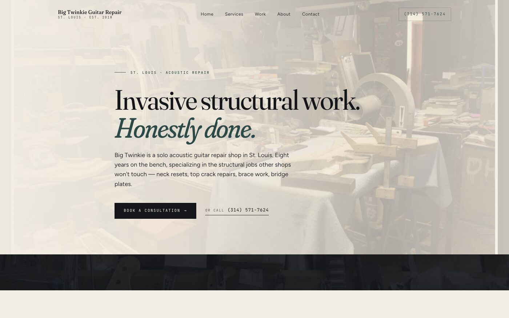

BenchMuse
Let's build you a website.
Ted Bergstrand
What you'll make
A real website with your photos, your words, your shop. Yours to keep, host anywhere.

What you'll need
Four things. I'll drop links in the chat for anything you don't have.
A computer
Mac or Windows. Either works.
Claude Code
The AI you'll be talking to. Free app; a subscription while you're building.
A Netlify account
Free. It's where your site will live once it's done.
Some photos
Phone pictures are fine. Of your bench, your instruments, you at work.
How it works
You don't write code. You don't pick templates. You just talk to Claude, and Claude builds.
Claude asks questions about your shop
You answer in your own words
Claude builds a site from what you said
You tell Claude what to change until you like it
You publish it
The five steps
Each one takes as long as it takes. You can stop between any of them and come back whenever.
Interview
Claude asks about your shop, your services, your story.
Design
Claude looks at your photos and picks colors and fonts that fit your shop.
Photos
Claude sorts your photos, shrinks them, and writes descriptions.
Build
Claude writes the site. You see it live in your browser.
Getting found
Claude adds the pieces that help Google point people to your shop.
About your photos
Don't stress about this part. Phone pictures are fine. A handful is enough.
Your bench
The workspace itself. Something that shows how you work.
A few instruments
Ones you're proud of. Finished or in progress, your call.
You working
Candid is fine. Doesn't need to be posed.
The shop
Inside, outside, your sign, whatever gives a sense of the place.
When you want changes
You tell Claude what's off. Plain English works. No technical terms, no menus to hunt through.
"The top photo is too big."
"This color looks off to me."
"I don't like this font."
"Can you add a page for my videos?"
Putting it online
One drag-and-drop and your site is live on the internet. That's the whole process.
Open Netlify in your browser
Drag your website folder onto their upload page
Your site is live at a free Netlify web address
Point your own domain at it whenever you're ready
Getting started
Grab the starter files from this link. Unzip the folder, put it on your Desktop, and open it in Claude Code.
github.com/tedbergstrand/benchmuse-website-builder-skills
Click the green
Code
button on that page, then choose
Download ZIP
.
Let's do this.
Grab the files →
github.com/tedbergstrand/benchmuse-website-builder-skills